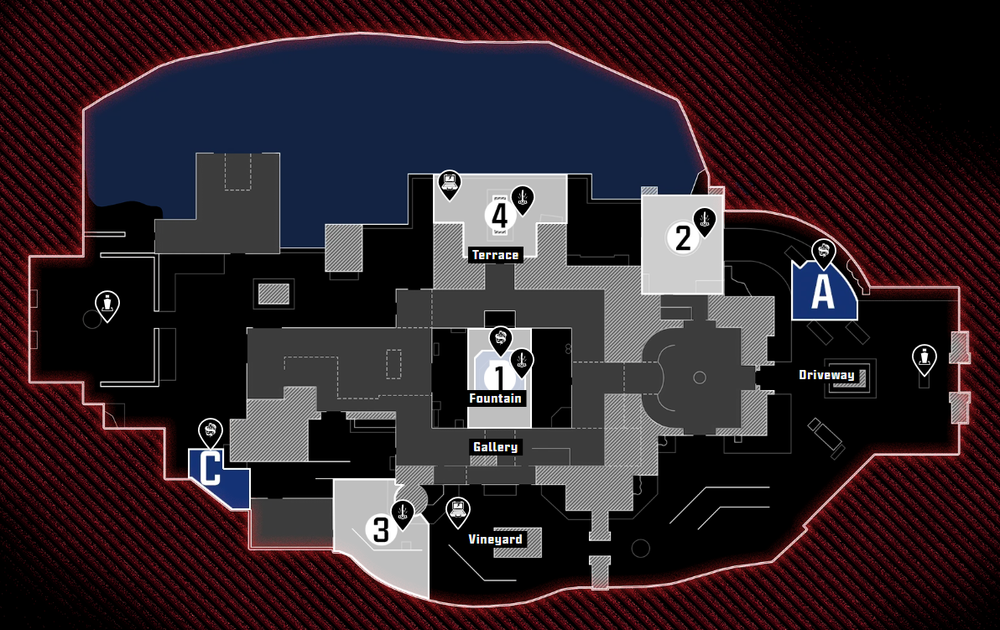

Bush AI / Recon
The map is the match.
Recon is a tactical match-intelligence prototype for reviewing competitive Call of Duty through timestamped minimap observations.
Explore Hacienda match report →01:00.5sampled window
4 playersmapped identities
122 sampleshalf-second timeline
HACIENDA / TACTICAL REPLAY

2165OBSERVATION TIMELINE00:30.0 / 01:00.5
A better review surface
Know what the data says. Know what it does not.
Recon keeps the map, timeline, and supporting context together. It is built around reviewed observations, so uncertainty remains visible instead of becoming invented analysis.
ObservedWhat the minimap visibly supports.
CalculatedMeasurements from reviewed anchors.
InterpretedTactical reads linked to time.